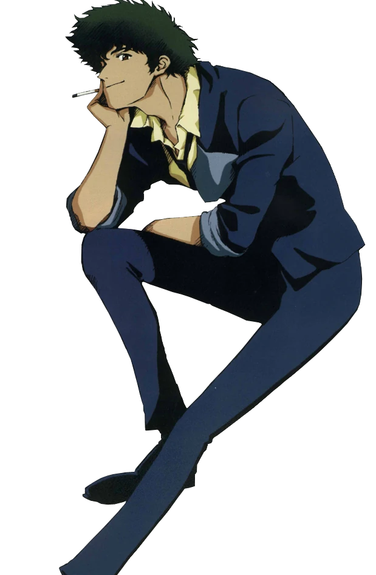

Spike Spiegel
"Just a humble bounty hunter, ma'am." - Spike Spiegel
Character Information
- Alias: Swimming Bird
- Hair color: Dark Green
- Eye color: Right - Light brown; Left - brown
- Height: 6'1"
- Weight: 175 lbs
- Birth date: June 26th, 2044
Backstory
Spike was a former member of the Red Dragon Crime Syndicate criminal organization. He was partnered with a man named Vicious and later had a romantic affair with his girlfriend Julia. This caused them to become enemies. He faked his own death to leave the Syndicate and attempted to rendevous with Julia who never showed up. He then later partnered with Jet Black and they became the most revered bounty hunters in their field.
Abilities
- Martial arts
- Piloting (pilots Swordfish II)
- Marksmanship
Personality
Spike is a cynical, nonchalant, and laid-back character. He lounges, sleeps, and smokes a lot, and is often seen as lazy. However, he is also a skilled fighter and bounty hunter, and is known for his quick reflexes and sharp wit. He also has very little patience and seems depressed. He has an inability to let go of his past and plays a role more akin to an anti-hero. Back to Gallery